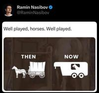

0


Microsoft is overhauling Windows 11 search to prioritize local apps, files, and settings over web results while removing ads, promotions, MSN/Bing clutter, and other distractions. "You've have been asking for search that is faster, more relevant, and easier to use -- whether you're opening an app, finding a file, or changing a setting," Microsoft says in a new blog post. "Because the Windows Search Box is where many people start, we focused first on making results more dependable, easier to scan, and clearer before you click." Windows Central reports: The company is highlighting several key improvements, including clearer results that does a better job at showing why a search result is appearing when a query has been typed, alongside prioritizing local results before reaching out to the web.
Search is also getting better at handling things like typos, which should help surface the right results even when the user misspells an app or file. The search home pane will no longer show MSN or Bing content, and promotional content and ads will no longer appear in search results.
These upgrades are now rolling out to Windows Insiders in the Experimental Channel, and are expected to roll out to all Windows 11 users later this year. Insiders may not see the changes right away as they are rolling out in waves. The full list of changes can be found here.
Read more of this story at Slashdot.
German textile firm ZEGO has filed for insolvency and is blaming a March cyberattack that shut down production for nearly six weeks. "ZEGO's filing adds another name to the short but growing list of companies that say a digital break-in was commercially fatal to their business," reports The Register. From the report: In a notice to customers and suppliers, the organization said it had exhausted every available option before seeking insolvency protection. Managing director Johannes Zenglein described the filing as "one of the most difficult steps in our company's 37-year history." "The cyberattack of March 29, 2026, however, impacted our company to an extent that we could not fully compensate for despite our best efforts," Zenglein wrote. "The consequences resulted in a production outage of nearly six weeks and significant financial strain. These effects ultimately impacted our financial situation so severely that filing for insolvency became necessary."
ZEGO did not disclose what kind of attack it suffered, whether ransomware was involved, who was behind it, or whether customer or employee data was compromised. What it has made clear is that the operational disruption alone was enough to push the business beyond the point of recovery. ZEGO said insolvency proceedings have now been initiated, but insisted the filing does not necessarily spell the end of the business. It said it plans to keep production running while administrators attempt to restructure the business, preserve jobs, and keep customers and suppliers on board.
Read more of this story at Slashdot.
A coalition of 12 states led by California is suing to block the $111 billion Paramount Skydance-Warner Bros. merger, arguing it would reduce competition in theatrical distribution, blockbuster films, and basic cable licensing. The challenge (PDF) defies the DOJ's approval of the deal. Variety reports: The coalition, led by California Attorney General Rob Bonta, alleges that the $111 billion transaction violates the Clayton Act by lessening competition in three distinct markets: wide-release theatrical distribution, "top-grossing" theatrical distribution, and basic cable licensing. "The unlawful merger of these two entertainment behemoths would lead to higher prices, lower quality, and less content for film and television, harming movie theaters, basic cable distributors, and ultimately, audiences on every sofa and movie theater seat in the U.S.," Bonta said in a statement on Monday.
The suit argues that the combined company will control 27% of the wide-release theatrical distribution market, 30% of the submarket comprising "anticipated blockbuster films," and 27% of the basic cable bundle. The states argue that such consolidation will harm theaters and cable and satellite providers that rely on competition among distributors. Paramount and Warner Bros. are two of the five remaining legacy studios. Together, all five -- including Disney, Sony and Universal -- control 86% of theatrical distribution and 90% of blockbuster distribution, the states said. Warner Bros. and Paramount are also the second- and third-largest basic cable distributors, respectively.
[...] The states are expected to seek an injunction to block the transaction, which Paramount expects to close sometime after July 22. The 12 states in the coalition are Arizona, California, Colorado, Connecticut, Massachusetts, Minnesota, Nevada, New Jersey, New Mexico, New York, Oregon, and Washington. [...] All are represented by Democratic attorneys general. "Consolidation here not only leads to higher prices -- it also leads to fewer opportunities for important stories to come to life, and fewer ways for audiences to encounter stories, ideas, and perspectives beyond their own experiences," Bonta said. "In this country, no one is above the law. With this lawsuit, California and our sister states are fighting for free and fair markets, not rigged markets. America has no kings in government or our economy."
Read more of this story at Slashdot.
According to the Wall Street Journal (paywalled), Apple agreed to use Intel's U.S. chipmaking plants after White House officials pressured Tim Cook during tariff-relief talks last summer. MacRumors reports: In August 2025, Apple CEO Tim Cook was in Washington to lobby the Trump administration to drop its proposed 100 percent tariff on semiconductor imports -- a levy that would have raised costs across Apple's product line. Apple reportedly secured an exemption after pledging to invest hundreds of billions of dollars in the U.S., although many of those investments were already planned. During the meetings, president Trump and commerce secretary Howard Lutnick are said to have urged Cook to use Intel's fabrication plants to make some of Apple's chips. The link between the tariff talks and the Apple-Intel deal had not been previously reported.
Almost a year later, Trump announced via his Truth Social platform that Apple would begin using Intel-made chips in some products. "We need to design and build our Chips right here in America," the president posted. The news sent Intel shares to record highs. According to a person familiar with the negotiations cited by the WSJ, Apple plans to have Intel make chips for both Mac laptops and iPhones. The report doesn't say which chips or in what volume, and Apple is expected to remain reliant on Taiwan Semiconductor Manufacturing Company, or TSMC, for the majority of its custom silicon.
Read more of this story at Slashdot.
BrianFagioli writes: Cloudflare has launched Precursor, a new behavioral bot detection system that monitors mouse movement, typing cadence, scrolling, clipboard activity, page visibility, and other signals across an entire browsing session. The system is designed to catch advanced bots that can run JavaScript, use real browsers, and pass traditional CAPTCHA challenges. Cloudflare says Precursor does not record actual keystrokes and instead studies timing and rhythm. The company also says the data is not tied to user identities or persistent profiles. Even so, software that watches how people move and type throughout a visit raises privacy concerns, especially as Cloudflare claims bots now generate roughly 57 percent of all Internet requests.
Read more of this story at Slashdot.
"Git and email are the two really only tools I use," Linus Torvalds said at Open Source Summit India 2026. But ZDNet reports that he also shared his thoughts on Rust, C, and patch-checking tools:
"I use Google as a way to look things up." He added, "I'm unusual; most of the other maintainers end up using many more tools, and I think a lot of them are starting to use AI tools for patch checking," while he "works at a higher level. I work with people, not tools."
When asked about Rust both in Git and the kernel, he pushed back against hype: "I'm not sure Rust is going to take over the world. I still think Rust is very interesting, [but] I still find C to be a much simpler tool." Torvalds continued, "I'm much more excited about all the tools we have for verification of C," including "automated patch verification tools" and "automated email checking tools for patches like Sashiko." Summing up, Torvalds told the Mumbai audience: "I'm more of a hack-and-slash kind of person, and I still like the raw and simple power of C, and I don't think that's going to change."
Torvalds also warned against overestimating Rust's benefits: "Rust fixes a few easy bugs that you can make in C, but it does not fix the logic errors, right? It does not think for you, and when you write incorrect code, the language does not matter. The end result will be incorrect." On mixed C/Rust code bases, he pointed out that guarantees are limited: "The guarantees that Rust give you only apply in the Rust-only parts of your code base, and wherever you interact with C code, all bets are off," with most Rust code in Linux talking to "core kernel C code" that is "much better quality... because that code has been tested in every single environment."
At the same time, Torvalds pointed out, "some of our big and more high-profile bugs in the kernel lately have been logic errors" rather than the kind of memory errors Rust prevents.
"It was just bad programming, which sadly happens even in carefully maintained subsystems and important kernels that are supposed to be very secure."
Read more of this story at Slashdot.
"Japan's experimental reusable rocket took off and safely landed in a first test flight Saturday," reports the Associated Press, as Japan "seeks to achieve the technology key to cut launch costs and compete in the global space market dominated by SpaceX."
The RV-X rocket lifted off, hovered and moved horizontally before landing [watch the video here] during its less than one-minute flight at the Japan Aerospace Exploration Agency's Noshiro Testing Center in northeastern Japan, which was livestreamed by the NVS, a group of space fans...
Saturday's flight is a step forward for Japan in achieving the technology needed to develop a lower cost successor to the country's current mainstay, single-use H3 series.
Japan's test comes the same week that China recovered an orbital booster rocket for the first time.
Read more of this story at Slashdot.
An anonymous reader quotes a report from the Associated Press: Hundreds of economists say in an open letter that institutions "must act now" to address how artificial intelligence could transform the economy and could put many people out of work. The statement released Monday was signed by top economists, along with computer scientists and some executives at tech companies including Anthropic, Google and OpenAI.
"AI may become radically more powerful over the next 10 years," says the letter organized by Stanford University's digital economy lab. "This could drive an unprecedented transformation of our economy, larger than the Industrial Revolution, but unfolding over a vastly shorter time frame. It could bring risks, including large-scale job displacement, as well as opportunities such as major gains in living standards."
The letter, which has only four sentences, says leaders must "build the incentives, guardrails, and institutions needed to steer AI in a direction that complements humans and benefits society." The Stanford lab says the letter has so far been signed by more than 200 economists and AI researchers, including 16 winners of a Nobel Prize. "We must be intentional and make collective, democratic choices, rather than letting market forces play out and risking leaving most citizens behind," wrote computer scientist and AI pioneer Yoshua Bengio, who was also among the signatories. He said it "it is highly plausible that AI will drastically transform our economies."
Other signatories include Google CEO Eric Schmidt, LinkedIn cofounder Reid Hoffman, and Nobel laureates Joseph Stiglitz, Daron Acemonglu, and Simon Johnson.
Read more of this story at Slashdot.
CISA and allied governments are warning users to secure their routers as Russian state-backed hackers continue compromising the devices and turning them into proxy nodes to disguise attacks against critical infrastructure. The advisory urges users to disable outdated SNMP versions, use strong passwords, update firmware, and turn off unnecessary router services to reduce the risk of being swept into these botnets. Ars Technica reports: "Russian Federal Security Service (FSB) Center 16 cyber actors continue to exploit poorly configured and vulnerable networking devices worldwide, opportunistically compromising multiple critical infrastructure sector networks," the Cybersecurity and Infrastructure Security Agency said Monday. The hacking groups are tracked under various names, including Berserk Bear, Energetic Bear, Crouching Yeti, Dragonfly, Ghost Blizzard, and Static Tundra. The advisory was co-issued by governments from around the world, including Australia, Denmark, New Zealand, and the UK.
The primary means of compromise the agency warned about was hackers scanning IP ranges with active Simple Network Management Protocol (SNMP) agents that accept common or default authentication credentials. These scans are run by the very sorts of router botnets the actors are trying to enroll the targeted device in. By sending malicious traffic from spoofed addresses, the hackers can use the SNMP agent on poorly configured routers to run malware. SNMP allows users to collect and organize information about managed networking devices or to modify that information to change device behavior.
With control of a device, the hackers then use it as an exit node when probing or attacking targets in the communications, defense, energy, financial services, and government sectors. By funneling the malicious traffic through a benign-appearing device on a trustworthy IP address, the attackers are able to lower the chances of getting blocked by firewalls and other security defenses. Monday's advisory made no mention of identical operations carried out in recent years by China. So-called residential proxies are also a go-to tool used by financially motivated criminal hackers to obscure their true IP address. In many cases, these sorts of proxies are made up of millions of streaming devices that are sold with preloaded malware.
Read more of this story at Slashdot.
The European Union is considering major new restrictions on children's access to social media, including age limits, phased access, and an outright ban. "This is not about whether children can access social media," said European Commission President Ursula von der Leyen. "It is about when social media can access our children." The Verge reports: Social media platforms could also be forced to prove their services are not harmful before young people are allowed to use them. European Commission President Ursula von der Leyen said the bloc's executive arm could propose new legislation within months, after reviewing recommendations from a panel of experts released today.
The panel recommended using a phased approach, including "no screens at all" for children under 3, supervised internet use for those under 13, and some limits for older teens. It also said social media platforms should have to prove their services are safe to younger users, an approach von der Leyen said she supports. Von der Leyen said the Commission will consider the report and return with proposals "after the summer." Any legislation would still need approval from the European Parliament and the EU's 27 member countries before becoming law across the bloc.
Read more of this story at Slashdot.
A new Incogni survey suggests Americans are pulling back from social media, with more than half saying "maintaining an online presence feels like work" and 55% reporting they post less than they did five years ago. "The full study concludes that there's been a significant shift in public attitudes toward social media," reports PCMag. "Where it was once fun and relaxing, it's now growing dark and angsty..." From the report: As the chart shows, there's also a clear correlation with age. A full 60% of Gen Z respondents feel the pain of maintaining a social presence. Perhaps they have a niggling hope that they might still be discovered as an influencer? Those of us in the Boomer category are clearly more relaxed about it, with just 38% saying that maintaining a social presence feels like work. The survey quizzed respondents about how they feel when they don't keep up with checking their socials and, by extension, how they'd feel if they just plain quit. They were given choices, both positive (peace, relaxation, and relief) and negative (anxiety, fear of missing out, and discomfort).
Overall, positive reactions held slightly greater sway, with an average of about 21% compared with 19% for negative reactions. The Gen Y contingent accentuated that split, with 25% positive and 21% negative, while Gen X went even further, with 20% positive and just 13% negative. But the Gen Z group flipped the results, identifying 27% negative and 26% positive reactions to going without social media.
There's another force pushing folks away from the socials: increasing politicization. Of the survey's respondents, 44% agreed that political content is driving people away from social media, and only 20% disagreed. Among Gen Z respondents, the impetus was stronger: 48% agreed, and just 13% disagreed. These negative feelings associated with politics only serve to highlight the positive reactions to deleting your social media.
Are you posting less on social media than you did five years ago, and are you being more selective about who can see what you post? Then you're with the majority. More than half of the respondents answered yes to each of those questions. But would you ever parlay fewer posts into no posts (aka quit posting entirely)? When asked what it would take to finally get them to terminate a social media account, a die-hard group of one in six respondents said there's nothing that could make them quit. But more than half could picture quitting due to security concerns, and almost half accepted the possibility that harassment or hate speech could send them packing. Others cited the amount of time wasted on scrolling through social media and the mental health threats of doomscrolling.
Read more of this story at Slashdot.
An anonymous reader quotes a report from The New York Times: A state-owned newspaper in China recently published a satellite image of a data center in Gainesville, Va., writing in English that the development of artificial intelligence posed a threat to Americans' physical and financial well-being. A comic strip made to look as if it had been published by a Maryland news outlet -- created with OpenAI's ChatGPT by people in China, the tech company said -- circulated on X this year, blaming data centers for soaring electricity bills. It showed a tycoon smoking a cigar and clutching bags of cash. A video shared on X by a known covert Russian influence operation questioned the viability of a data center that an American company, Firebird, is constructing in Armenia, the small Caucasus nation that has been a focus of Kremlin pressure. "The country's electrical grid instability may render it useless," the video's narrator says.
All are examples of a push by foreign adversaries to seize on what polls have shown is deep ambivalence -- verging at times on hostility -- about the spread of the data centers needed to power A.I. in the United States and elsewhere. China, Russia and, to a lesser extent, Iran have sought to use state media outlets to turn the controversy over data centers in the United States into "a domestic fracture point," according to a new analysis by Alethea, a threat intelligence company, which identified scores of articles and posts on social media this year. These campaigns, whose impact on public opinion remains to be seen, have raised alarms in Washington, where A.I. is seen as a top issue heading into this year's midterm elections.
Read more of this story at Slashdot.
America "is facing what's projected to become the largest labor shortage in its history," according to experts interviewed by the Washington Post:
Economists warn that the worsening labor problem, due in part to a skills shortage and population shifts, will be vast and reach beyond tech. It "could hobble the American economy for years to come," predicts the Georgetown University Center on Education and the Workforce. Lightcast, a labor market data company, calls it "the largest labor shortage the country has ever seen." JPMorgan Chase warns of a national security risk from "a pervasive talent deficit that constrains the nation's capacity to build, compete, and protect its interests." There will be shortages in the tens or even hundreds of thousands of nurses, physicians, teachers, engineers, pharmacists, mental health counselors, construction worker and airplane mechanics — jobs AI generally can't do...
Among the trends that have been leading to this moment: a mismatch between the careers college graduates are pursuing and the jobs employers are struggling to fill. Far fewer students are majoring in health care fields than are needed to meet demand, for instance. "We have pumped so many young people into business and finance" when what's really in demand are graduates in other fields, [said Ron Hetrick, Lightcast's principal economist]. "It's like a factory producing these workers like widgets, even though society is saying, 'We really don't need them.' And the factory just keeps pumping them out." But the principal reason for the looming workforce shortages is much more basic. A protracted decline in birth rates is coinciding with a record wave of retirements, data shows.
From 2024 to 2032, when the last baby boomers sign up for Social Security payments, more than 18 million college-educated workers will leave the labor force while fewer than 14 million enter it, according to the Georgetown center. Meanwhile, even as the number of people with associate and bachelor's degrees falls, the number of jobs requiring them will grow, the center forecasts. That will leave a gap of 4.6 million workers. Lightcast puts the deficit at an even higher 6 million... The effect of population shifts on the supply of talent, with or without degrees, has been compounded by a drop in the proportion of high school graduates choosing to go to college, a sharply reduced rate of immigration, and a growing number of Americans leaving the workforce altogether because of such issues as lack of child care, early retirement, incarceration and substance addiction, according to the Chamber of Commerce.
Three interesting statistics from the article:
U.S. college/university enrollment in 2023 was down by nearly 2 million students since its peak in 2010, according to the most recent data from the U.S. Education Department.
America's low birth rate since 2010 "means the number of college-age Americans is forecast to decline by another 13 percent through 2041."
South Dakota has just 41 workers for every 100 open jobs... while California and nine other states have more workers than jobs, the Chamber of Commerce found.
Read more of this story at Slashdot.
Long-time Slashdot reader necro81 writes: There are several companies, such as Tesla, trying to make semi trucks fully electric. The capital cost for such a truck, and the MW-scale infrastructure to recharge it, may be a hard sell for some operators. [IEEE Spectrum notes that's a charging infrastructure "that most freight corridors do not yet reliably provide."] But some companies are instead adding batteries and an electric motor to the semi-trailers that trucks haul behind them.
"The Nivalis Powered Trailer Kit centers on an electric axle [rated at 50 kilowatts-peak]... capable of both propulsion assistance and regenerative braking. It draws on a 60-kilowatt-hour, 400-volt lithium-ion battery pack charged from three sources: the axle itself during braking and deceleration, a full-rooftop array of photovoltaic panels generating up to 3.7 kilowatts-peak, and a 32-amp, three-phase AC grid connection available during parking stops."
This approach is more akin to a plug-in hybrid: the truck may still be diesel-powered, but the electric assist from the trailer allows the truck to run more efficiently. Replacing diesel with kWh can save operators money while also reducing emissions. This incremental approach may be more accessible and less capital-intensive than replacing the truck itself.
From the article:
The driver's only window into the system is a small display readable from the cab's side mirror that shows the system status and battery charge level. Nothing about the trailer's handling or licensing requirements changes. The partners project savings of up to 7,000 liters of diesel per trailer per year, which is enough to keep about 19 tonnes of carbon dioxide out of the air...
Trailer Dynamics, an Aachen-based company, has conducted field tests with BMW Logistics, DB Schenker, Duvenbeck, and Volkswagen Konzernlogistik, reporting average fuel savings of around 40% for diesel tractor combinations, substantially higher than the up to 18% reduction implied by the Nivalis projection... Trailer Dynamics prices its system between €145,000 and €195,000 and targets a payback period of no more than five years. Nivalis targets five to six years at current costs.
Read more of this story at Slashdot.
Astronomers have detected erythrulose, a sugar found in raspberries and self-tanners, in a gas cloud near the center of the Milky Way. While not essential for life itself, the molecule can convert into a form thought to be important for life's origins, adding evidence that key prebiotic ingredients may be widespread across the galaxy. The Associated Press reports: Using two dish-shaped radio telescopes in Spain, researchers collected data from a large gas cloud near the center of the Milky Way. They identified the sugar in gas form by comparing telescope signals to samples in the lab. It's the latest kind of sugar detected in space -- in a region crossed by NASA's twin Voyager, the farthest spacecraft to ever travel from Earth.
Scientists have found interesting chemistry in our galaxy, including building blocks for genetic material and parts of the cell. They spotted a cousin to table sugar near the center of the Milky Way about 25 years ago, and black grains from asteroid Bennu retrieved by NASA's Osiris-Rex spacecraft yielded other sugars, including a key DNA ingredient. The latest sugar isn't essential for life, but can easily convert to a form that's thought to be crucial to kick-starting life on Earth. And it's one of the most complex sugars spotted so far, said astrophysicist Erika Hamden with the University of Arizona. The results were published in the journal Nature Astronomy.
Read more of this story at Slashdot.
Lucas Ropek / TechCrunch : Nikita Bier says X made a “tweak to boost visibility of your posts to your mutuals”, or those who users follow back, to avoid replies becoming a “battleground” — X has made a “tweak” to its algorithm to boost the visibility of posts to users' “mutuals” …
Demis Hassabis / @demishassabis : Demis Hassabis proposes a US-based Standards Body for “Frontier-class” AI, modeled after the FINRA; labs would voluntarily share models 30 days before release — This is a pivotal moment in human history. Artificial General Intelligence (AGI), a system that exhibits …
Zijing Wu / Financial Times : Sources: DeepSeek is in preliminary talks with investors about raising new funds at a ~$71B valuation, after raising ~$7B at a ~$52B valuation at the end of May — Unusually swift pace of capital injection comes as Chinese AI start-up seeks to build out infrastructure
Samuel Axon / Ars Technica : A look at AI world models, including how they work, what they can do, and what's still unsettled, as startups led by tech leaders like Yann LeCun raise billions — Experts explain how they work, what they can do, and what's still unsettled. — Over the past few years …
Kiranjeet Kaur / IDC : China's smartphone shipments fell 4.3% YoY to 66M units in Q2, the fifth consecutive quarter of decline, amid a memory shortage; Huawei and Apple grew shipments — What Happened in China's Smartphone Market in Q2 2026? — China's smartphone shipments came in at roughly 66 million units …
Trishla Ostwal / Adweek : eMarketer: chatbots like ChatGPT and Google AI Mode will generate less than $1B in ad revenue in 2026; OpenAI projected $2.5B in ChatGPT ad revenue this year — OpenAI is projecting $100 billion in ad revenue by 2030. Emarketer puts the ceiling for the entire chatbot ad market in U.S at just $5.41 billion.
Martha Muir / Financial Times : Google agrees to buy 100% of the initial output from the Steel River Energy Center's 1.6GW solar project in Arkansas when it becomes operational in 2029 — Deal signals continued demand for renewable energy despite Trump administration's efforts to end tax credits and stall plans
Dan Goodin / Ars Technica : Researchers detail “context bombing”, where defenders use prompt injections to trigger guardrails of attackers' LLMs, cutting AI hacking success rates by ~90% — Prompt injections, the malicious commands attackers embed into content to entice large language models to follow them …
Zijing Wu / Financial Times : Sources: Nvidia intensified due diligence and cut its authorized AI chip customers in Singapore, Malaysia, and Japan by 50%+ to prevent China diversions — Tougher vetting in Singapore, Malaysia and Japan reflects Washington's push to close export-control loopholes
Evelyn Cheng / CNBC : In the wake of China's “embodied AI” push, there's an urgency among China's 100+ humanoid startups to launch IPOs; LimX Dynamics raises $200M in a pre-IPO round — BEIJING — Humanoid startup LimX Dynamics is getting ready to go public, just over four years after it was founded during the pandemic.
Ivan Mehta / TechCrunch : Singapore-based and Alibaba-backed video generation startup PixVerse says it closed a Series C extension to raise $439M total for the round, valuing it at $2B+ — Singapore-based video-generation startup PixVerse said today that it has closed its Series C extension, with a total of $439 million raised in the round.
Jason Nelson / Decrypt : Anthropic research based on ~310K anonymized Claude conversations shows how Claude's expressed values and behaviors vary across models and languages — Claude doesn't behave the same way in every conversation. According to new research published Monday, AI giant Anthropic found …
TechCrunch : Sources: Nous Research, the startup behind Hermes, an open-source agent and OpenClaw rival, is raising $75M+ at a $1.5B valuation led by Robot Ventures — Nous Research, the startup behind the open-source Hermes agent, is finalizing a new round of funding led by Robot Ventures …
Benjamin Guggenheim / Washington Post : Sources: the Trump admin and industry groups discuss streamlining the releases of US open models of equal or lesser capability than leading Chinese open models — Plus, data centers could end up consuming less energy than we expect. — Exclusive: The Trump administration and the AI industry …
Will Shanklin / Engadget : Apple releases the first public betas of iOS 27, iPadOS 27, macOS 27 Golden Gate, watchOS 27, and tvOS 27, marking the new Siri AI's first public launch — Try the new Siri AI and system-wide performance improvements. — Adventurous early adopters, your moment has arrived …